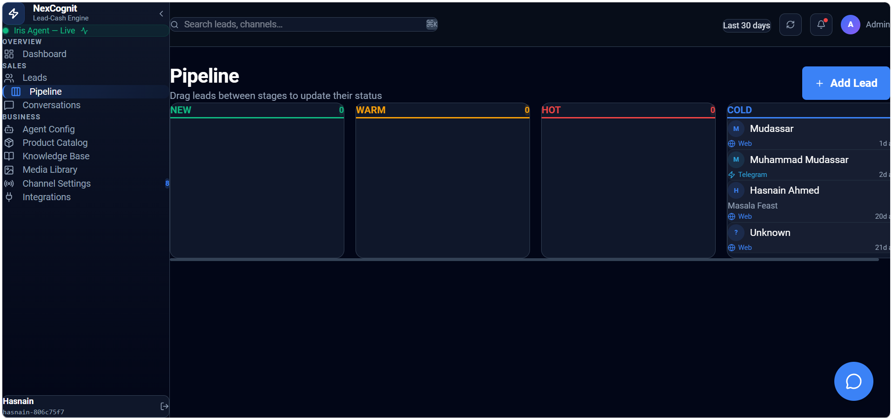

Pipeline
The Pipeline page helps your team view leads based on their current stage or status in the sales process. It provides a simple visual way to understand where leads are in their journey and which ones may need attention next.
Pipeline overview
The Pipeline view gives teams a quick way to scan lead progress and identify where follow-up may be needed. Depending on your NexCognit setup, the pipeline may be used to organize leads across different lead stages or statuses.

What the Pipeline page is used for
The Pipeline page is used to review leads from a progression perspective. It helps teams see which leads are moving forward, which may be waiting, and which need a follow-up action.
How the pipeline helps users visualize lead progress
The pipeline gives a visual view of lead movement through the sales process. Instead of reviewing every lead as a single list, users can quickly see where each lead sits in the journey and how far it has progressed.
How lead stages or statuses help organize sales activity
Lead stages or statuses help organize activity by showing the current position of each lead. This makes it easier to understand the next step, whether that means qualifying a new lead, following up with a warm prospect, or reviewing a lead that has stalled.
How the Pipeline page works together with Leads and Conversations
The Pipeline page complements the Leads and Conversations views. Leads provide the contact record and context, Conversations show the ongoing customer interaction, and the Pipeline view helps connect that activity to the broader progression of the sales workflow.
Why the pipeline view is useful for prioritization and follow-up
The pipeline view is useful because it helps teams focus on the leads that need attention most. By seeing the current stage or status of each lead, users can prioritize follow-up work more effectively and keep momentum across the sales process.
Things to know
- The exact stage names and workflow may vary depending on your NexCognit setup.
- Use the Pipeline view to support prioritization, not replace direct lead review.
- Pair the pipeline with Leads and Conversations for the full picture of each opportunity.